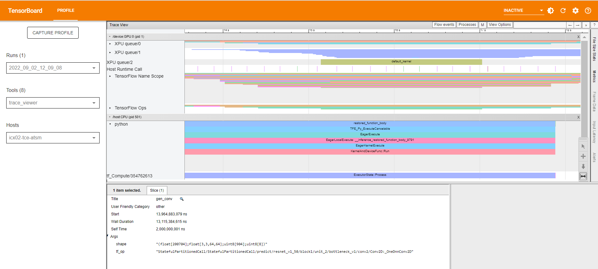

GPU Profiler¶
Usage¶
Intel® Extension for TensorFlow* provides support for TensorFlow* Profiler, and is enabled by exposing three environment variables (export ZE_ENABLE_TRACING_LAYER=1, export UseCyclesPerSecondTimer=1, export ENABLE_TF_PROFILER=1).
You can use the profiler to track the performance of the TensorFlow* models running on the Intel GPU.
The GPU profiler supports the following profiling items:
kernel_stats
tensorflow_stats
trace_viewer
Example:¶
requirements:
pip install tensorflow_hub pip install -U tensorboard-plugin-profile
script:
import tensorflow as tf import numpy as np import os import tensorflow_hub as tf_hub logpath = os.path.join('data', 'logs', 'profiler_demo') tf.debugging.set_log_device_placement(True) model = tf_hub.KerasLayer('https://tfhub.dev/google/imagenet/resnet_v1_50/classification/5') input = tf.ones((1, 224, 224, 3)) with tf.device("/XPU:0"): # Warm up model(input) tf.profiler.experimental.start(logpath) model(input) tf.profiler.experimental.stop() print('done')
run:
$ export ZE_ENABLE_TRACING_LAYER=1 $ export UseCyclesPerSecondTimer=1 $ export ENABLE_TF_PROFILER=1 python test.py
Run TensorBoard:
After executing the above sample code, you will find the log files in ./data/logs/profiler_demo. Then, run TensorBoard with following command:tensorboard --logdir=./data/logs/profiler_demo --bind_all
Analyze the result from the Profile tab:
kernel_stats:

tensorflow_viewer:


trace_viewer: 
FAQ¶
1.If you see “No dashboards are activated for the current data set.” the first time you enter the Tensorboard in the browser:
Refresh the page, and the profile should be shown.